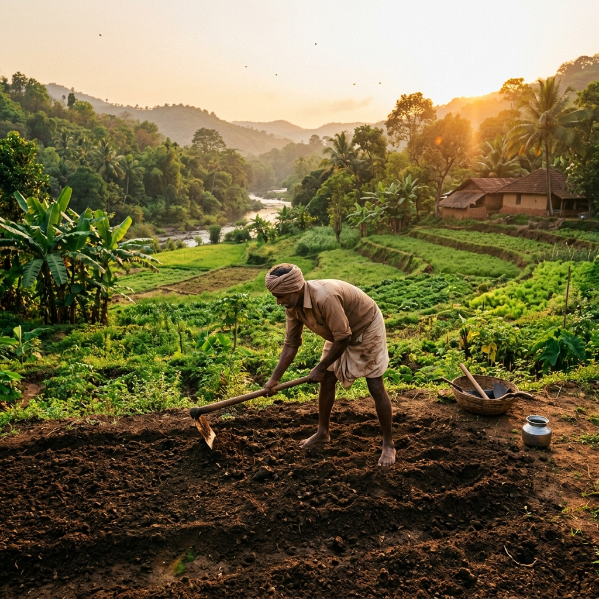
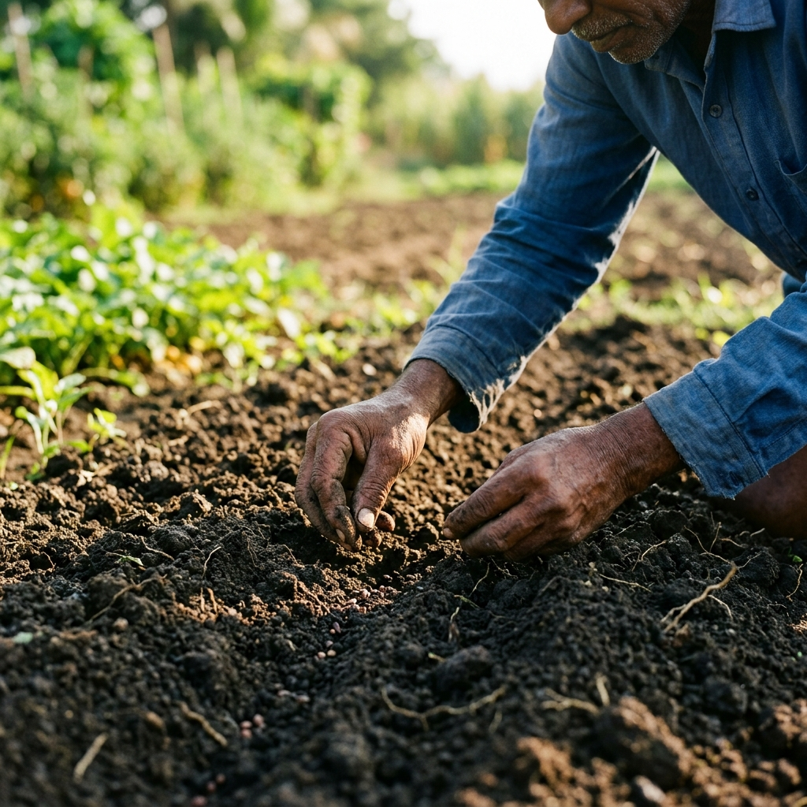
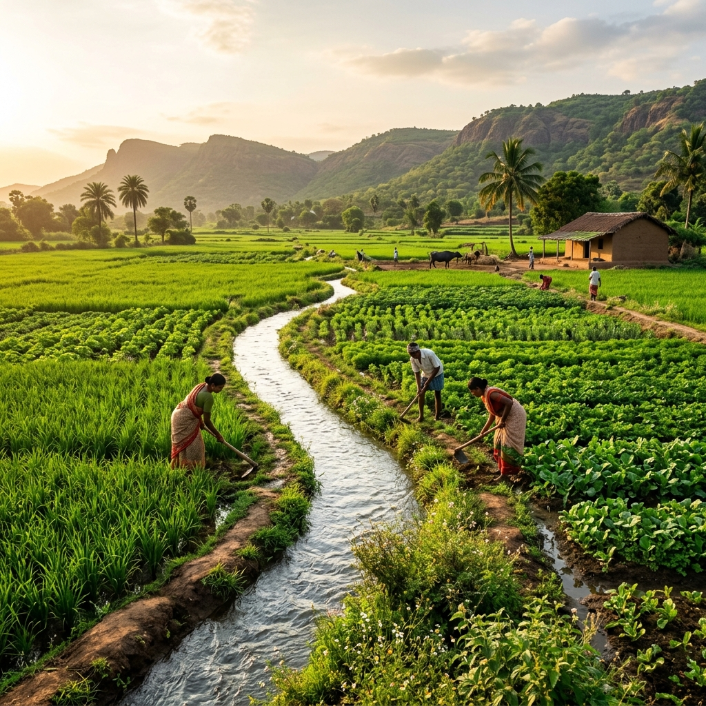
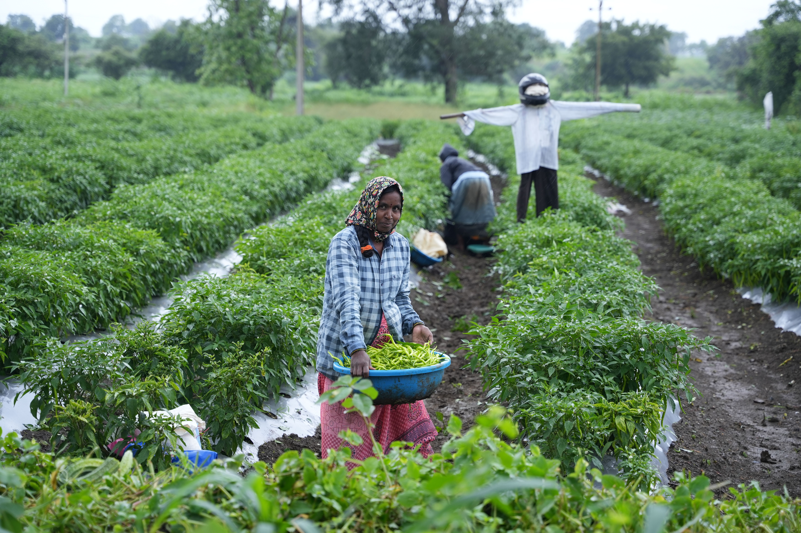
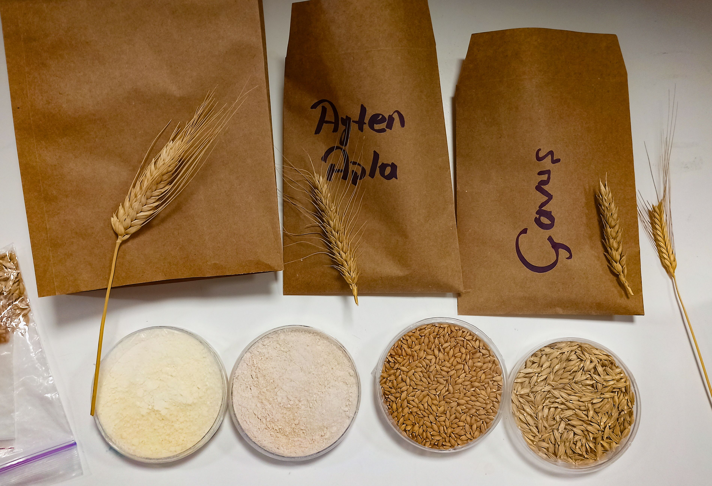

How We Grow
From seed to table, every step is carefully managed to ensure purity, freshness, and fairness.
The Farming Journey
Soil Preparation
The foundation of natural farming begins with healthy, chemical-free soil. We invest significant time restoring the earth's natural balance before planting.
-
Cleaning the field Thoroughly removing remnants of previous crops and debris naturally.
-
Leveling the ground Ensuring a perfectly flat surface for even, efficient water distribution.
-
Comprehensive Soil Testing Analyzing micro and macro nutrients to determine the soil's natural needs.
-
Natural Manuring Enriching the earth using organic compost and cow dung instead of synthetic chemicals.

Sowing
A bountiful harvest requires the highest quality seeds planted at precisely the right moment in the season.
-
Careful Seed Selection Hand-picking only the healthiest, non-GMO seeds for cultivation.
-
Precision Planting Sowing seeds in accurately spaced rows to ensure optimal sunlight and growth space.
-
Seasonal Timing Aligning our planting schedule closely with natural weather cycles and monsoons.

Irrigation & Care
We nurture our crops through traditional, sustainable methods that protect both the plants and the local ecosystem.
-
Sustainable Watering Utilizing efficient water channels to hydrate crops deeply without wasting resources.
-
Natural Weeding Removing competitive weeds by hand or traditional tools rather than harmful herbicides.
-
Toxin-Free Protection Defending against pests using natural repellents like neem oil and crop rotation.
-
Health Monitoring Daily manual inspections of the fields to ensure crops are thriving naturally.

Harvesting
The culmination of months of hard work, we harvest only when the crop reaches peak maturity and flavor.
-
Perfect Timing Waiting for the exact moment when nutritional value and natural taste are highest.
-
Careful Collection Hand-harvesting delicate crops by local farmers to prevent bruising and damage.
-
Optimal Storage Transferring produce immediately to climate-controlled, dry environments.

Packaging & Distribution
We maintain our commitment to nature all the way to your doorstep through eco-conscious packaging and direct delivery.
-
Grading and Sorting Meticulously cleaning and sorting the harvest to ensure only premium quality reaches you.
-
Eco-Friendly Packaging Using sustainable, breathable materials like burlap and brown paper to eliminate plastic waste.
-
Transparent Labelling Providing clear information about the farm, the harvest date, and the farmer's name.
-
Direct Distribution Bypassing middlemen to deliver fresh produce directly from our farm to your kitchen.

No Chemicals
We use natural farming methods to protect the soil and your health.
No Preservatives
Our foods are fresh and natural, exactly as nature intended.
No Artificial Colors
100% natural appearance, taste, and nutrition.
Farm Fresh
Delivered directly from the farm to ensure maximum freshness.
Empowering Farmers
Nutrivae Foods is built on a direct-to-consumer philosophy. Initially, we are proudly selling products directly from our own farm. This gives us absolute control over quality, ensuring that every grain and pulse meets our rigorous standards of being chemical-free and farm-fresh.
By cutting out the middlemen, we maximize the profits that stay with the farmers. As we grow, this model will empower other local farmers to join our network, guaranteeing them a fair and profitable return for their hard work while providing you with the purest food possible.